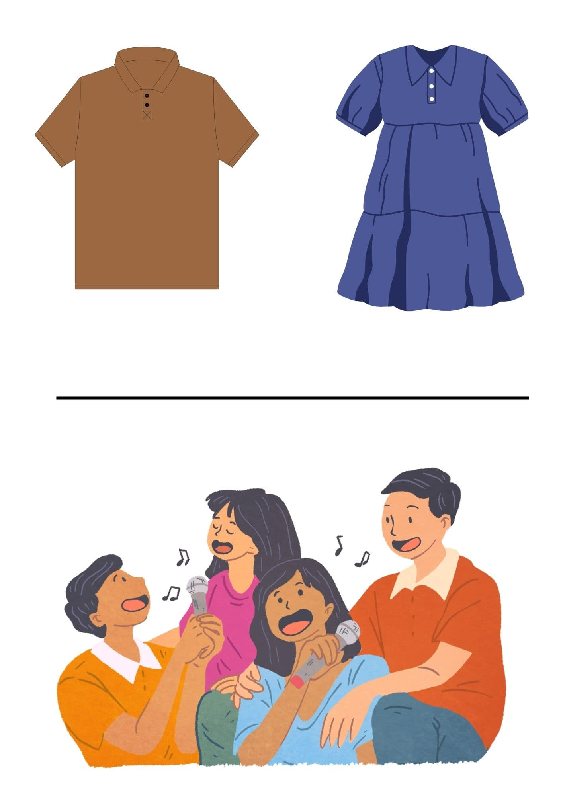
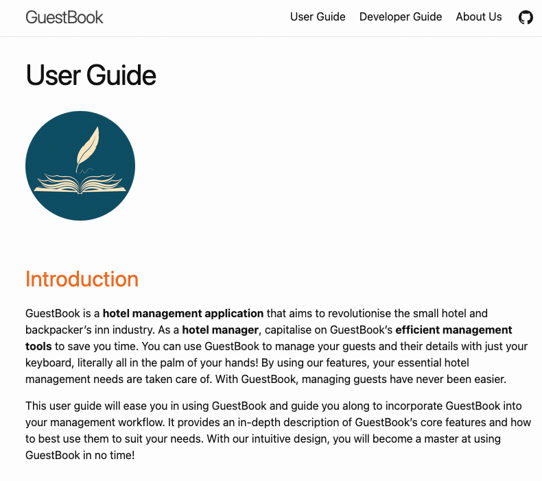

NUS CS2101: Effective Communication for Computing Professionals
My experiences and some tips!


Introduction
In this article, I will be sharing more about CS2101 Effective Communication for Computing Professionals, experiences taking the module and some takeaways. In short, CS2101 is a seminar-based communications module that is paired with CS2103T Software Engineering. The mod covers quite a large array of topics ranging from skills when working in a team, presentation skills, communication frameworks like how to deliver proper feedback, how to write a client-centric user guide and more.
Content Page
My Experience
My semester was the first semester since the start of Covid-19 where class resumed to normal with face-to-face seminars. While this lifted the atmosphere and made lessons more engaging, there was a trade off. Our presentations, which consisted of the bulk of our grades, had to be live and we could no longer read off our scripts hidden behind our computer screens. As such, most of us had to spend quite a bit more time and effort memorising and practising our presentations.
Going into more details of the two presentations, the first one occurs in the first half of the semester. It consisted of 4 topics to choose from - crafting a professional resume and cover letter, preparing for an interview, conflict management and building credibility in the workplace. Do note that your team for Oral Presentation 1 (OP1) is not the same as your CS2103T grouping. The second presentation takes place in the later half of the semester which is a demo or pitch about the application you are developing for CS2103T. This OP2 follows the same CS2103T group.

Appropriate attire and inclusitivity (Credits Canva)
Just some quick tips for the presentations, do coordinate the dress code with your teammates and wear something more formal. Don’t neglect the delivery and non-verbal cues as it makes your presentation more engaging and definitely makes you standout. Most importantly, as there is a fair amount of work to do for these presentations, do choose your group mates carefully! (You will be meeting quite often, at least once a week so do find people you can trust) Actually, I applied for my seminar slot with my friends but they did not get allocated the same slot and I ended up in the class not knowing anyone. Fortunately, I was lucky enough to find a group of really hard working and fun people for both my OPs, which made meetings a lot more enjoyable. Also bear in mind that there is a diversity rule when forming groups, where you need to have someone of different nationality and/ or gender (usually at least 1 female as most CS kids are males).
In addition, there are 2 essays or reflections that you would need to write. The first one is about your experience during one of your group meetings and the second one is about what you have learnt from this module or any insightful realisation. I believe the main aim of these essays are to encourage you to reflect on what you have experienced and hopefully discover areas that you can improve on in the aspect of communication. It would be good if you are able to build on and add to the concepts taught and go beyond simply repackaging and contextualising what was shared in class. My instructor also advised not to use overly complex words or sentence structures, like those you would use in an academic essay, and keep it easy to read and well organised.
As for the rest of the assessment breakdown, the remaining parts are made up of the User Guide and of course, not forgetting class participation!
Documentation
Moving on to the user guide and documentation, there are many ways we can document our code. At a fundamental level, adding comments inside our codebase that describe the “why” and “what” of the code (instead of the “how” as the workings of the code should be self explanatory) is a way to document and it speaks to future readers (yourself included) about the breakdown of code. This will help when revisiting your code after a couple of months or even help other developers who need to maintain your code. Another example of documentation is writing the API (Application Programming Interface) documentation that describes how to start using your code and some of its possibilities. Usually, only programmers read the API.

Example of a User Guide
However, the focus of CS2101 is on the documentation of the User Guide (UG). A User Guide is an instruction manual created for the users of the application to gain a better understanding of how to use your application. I have linked the user guide my team wrote for our project, GuestBook, for your reference! FYI, the same UG is graded for both CS2101 and CS2103T, so do it well!
As for the CS2101 side, there is a strong emphasis on ensuring that the UG is reader-friendly and reader-focused. I think this is where the concept of using Needs Analysis is really important, which helps us understand the context, audience and purpose of the UG. With that settled, to stand out more, it would be good if you could write creatively. You could use phrases like “Not to worry, we will walk you through step-by-step to better understand the core features of…” and to write as if you are speaking to the person reading the UG.
Conclusion
In conclusion, the general sentiment around this mod is that it's another fluff core module (like ES2660) and can and should be SU-ed. If you check NUSMODs, most of the reviews are negative. Many didn’t like the group forming process or felt the content was irrelevant to software engineers. However, I enjoyed it and learnt quite a bit! It is honestly one of the most chill computer science modules in NUS and a refreshing break from the intense technical mods.
Furthermore, I felt this mod helped me through my internship application process. I remember sharing what I have gleaned in this course during behavioural or human-resource interviews with larger companies. Unsurprisingly, by following the content of this module as a guideline when answering those questions, I could better showcase myself as a good cultural fit with the many companies.
Long story short, try to take this mod with an open mind. I really did learn a lot from this module and I am sure you will see the value of this module as well. All the best!